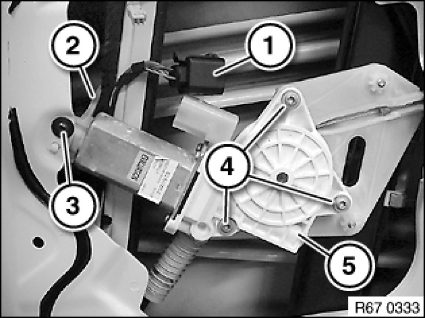

Front Door Window Motor: Service and Repair
67 62 000 - Removing and installing or replacing flat motor for front left or right power window unit

Necessary preliminary tasks:
- Remove sound insulation [1][2]51 48 060 Removing and Installing/Replacing Sound Insulation In Left or Right Front Door in front door

Disconnect plug connection (1).
Release screw (3) and remove bracket (2).
Release screws (4) and remove flat motor (5).
Tightening torque 67 62 1AZ [1][2]51 33 Power Windows, Front.
Installation:
Fit flat motor (5) exactly on teeth of power window unit.

Replacement:
Carry out normalization 67 62 ... Notes on Initializing Power Window Unit In Front Door